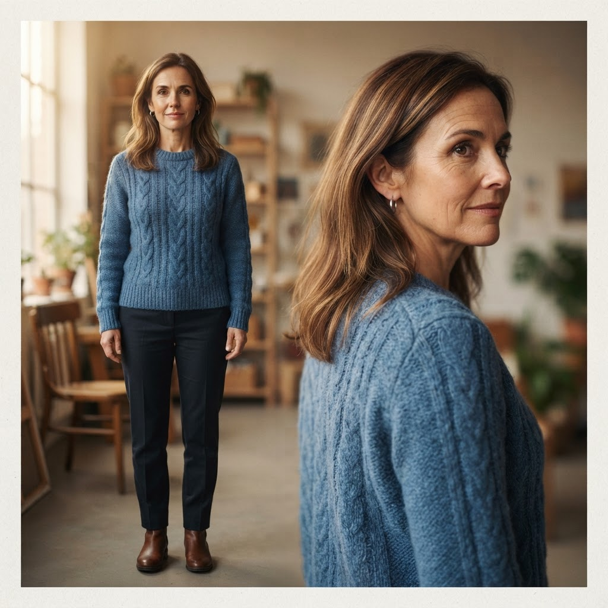
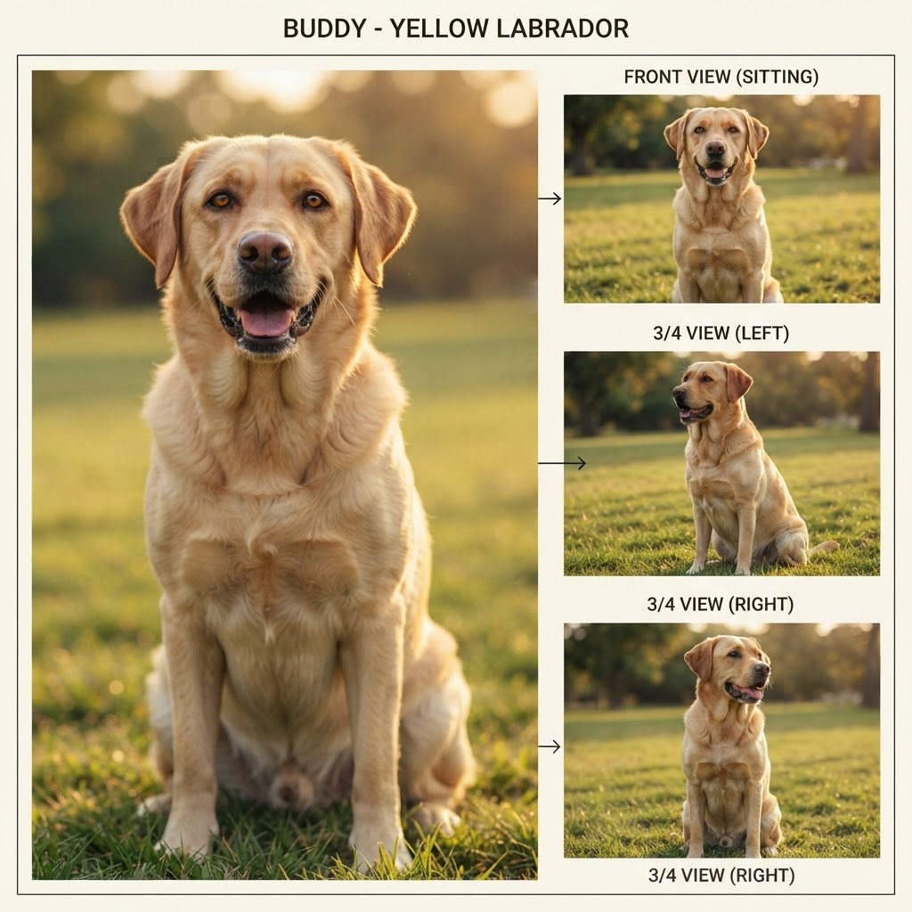
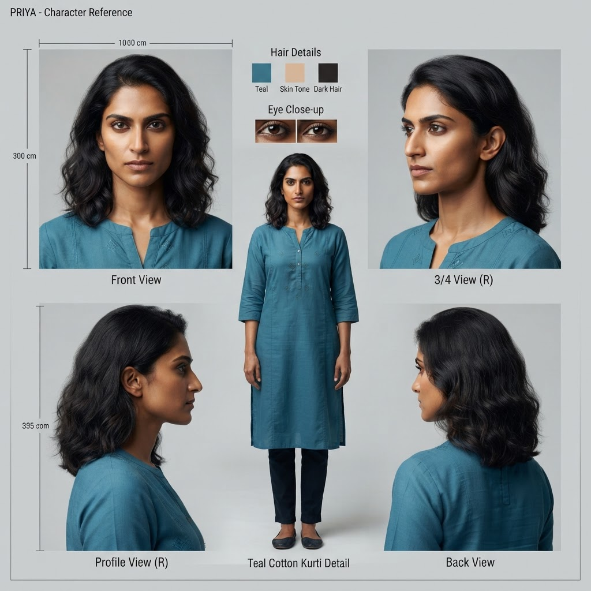

Part 3 of The Agentic Studio. Anyone can generate a clip. The moat is making a thousand clips that agree — on a face, a set, a light, a line of action — and doing it cheaply enough that the marginal scene approaches free. This part is about the invariants that are hard on purpose, and the unit economics that follow from getting them right.
Part 1 argued the render function is being commoditized; Part 2 built the scheduler around it. The open question is where defensibility lives once every competitor can call the same generator. The answer is the thing a raw generator structurally cannot give you:
Cross-asset consistency. A generator optimizes each output independently; a studio optimizes the agreement between outputs. That agreement is enforced by state and validation the model never sees — which is exactly why a better model doesn't erase the moat, it feeds it.
Three invariants carry the weight. Each is a concrete engineering problem with a concrete mechanism, and each gets harder — not easier — as the render function improves, because a sharper render makes an inconsistency more obvious, not less.
What "the product" looks like: three framings of one scene where identity, continuity, and the world all hold. No single render gives you this — it's the invariants below, enforced together.
The identity anchors from The Choice — one canonical reference sheet per character, re-fed into every shot so the same face/wardrobe survives the whole film:



The problem. The same character must read as one person across dozens of shots, at different angles, distances, and lighting, when every render is an independent stochastic draw. Prompt the same description twice and you get two different people — imagine a film where the lead is quietly recast with a new look-alike in every single scene. That's the default behavior you're fighting.
The mechanism. Cast once, then condition every render on a canonical reference sheet — a front + 3/4 view generated at project start and stored in the bible. Keyframes are composed from those sheets, not re-described from text. And critically, composition adds one character at a time (≤2 reference images per model call) starting from the styled empty set plate: pass a crowd of references at once and the model drops or invents people. The constraint is counterintuitive and it is load-bearing — resist the urge to "optimize" it into a single multi-reference call.
The judge. A vision critic scores identity against the reference sheets, not against a vague notion of "a person." A single-image check literally cannot tell "the same character" from "a character"; the reference is what makes the score mean something.

The reference sheet is both the input to every render and the yardstick the critic judges it by. "Does this look like her?" only has an answer because there is a canonical her to compare to.
The same cast, consistent across different scenes of The Choice — same identities, look and world, scene to scene:
The problem. Screen direction, eyelines, the 180° line, lens family, and shot-to-shot angle deltas must hold across cuts, or the audience feels the space break even if every individual frame is beautiful. These are the famous blooper-reel gaffes — the coffee cup that appears mid-scene, the actor looking the wrong way after a cut so two people seem to trade seats. This is not a matter of taste; it is a set of rules professional script supervisors enforce on set precisely because they are easy, invisible mistakes to make.
The mechanism. Encode them as a deterministic validator over the shot-plan JSON — pure logic, no I/O — and gate rendering on it: R7 establish-first, R1 180° line, R3 eyeline, R4 30° jump-cut, R14 reciprocal OTS height, R19 lens consistency. The plan persists only with zero error-severity violations (warnings are allowed). The gate runs before a single frame renders, so a continuity mistake costs microseconds of CPU, not a GPU render you then throw away.
Why deterministic. Continuity is provable — you can check the 180° line with arithmetic. Using an LLM for what a rule can prove is slower, costlier, and less reliable. Save the model's judgment for what is genuinely subjective.
The problem. Some shots fuse distinct visual domains that must read as one photograph — the running example: a painted galaxy at optical infinity over a sharp, night-lit town. Get it wrong and the sky looks glued on, the single most common tell of amateur compositing. Think of a TV weather presenter whose lighting doesn't match the map projected behind them: your eye flags the fake instantly, even if you can't name what's off. A generated galaxy floating over a generated town fails in exactly the same way — two layers that never agreed on where the light comes from.
The mechanism. A single global style anchor both domains derive from, locking one color temperature, one grain, one palette across the cosmic and terrestrial layers. Then extend the critic with a lighting-coherence dimension: does the sky's light direction and color temperature match the ground's? This is a judgment a rule can't express and a single-frame glance can't catch — exactly the critic's job. (It also motivates extending the continuity validator with a gaze-to-environment rule: when a character looks up at the galaxy, the gaze vector must agree with where the galaxy is framed across cuts — an eyeline match where one participant is a set, not a person.)
Invariants are only real if something checks them and something fixes them. The studio runs a bounded correction loop on every render:
render → critic scores vs reference sheets + style anchor
→ if pass: persist (qc_ok, qc_score) to the bible
→ if fail: feed the critic's ISSUES back into the prompt, re-render
→ repeat up to QC_MAX_TRIES, then escalate to the human
Two properties make it production-grade rather than a demo. It is bounded — a fixed retry ceiling, like a shoot with a limited number of takes, so a pathological prompt can't burn the budget. And it is corrective, not blind — the next attempt receives the critic's specific issues ("second character missing," "eyeline reversed"), not a fresh reroll of the dice. Blind retries converge slowly if at all; issue-directed retries converge fast.
Consistency is the product; economics is why the product wins. Decompose a scene's cost:
attempts × per-image, with attempts
bounded by QC_MAX_TRIES (default 2) and usually 1. The critic adds one cheap vision call per
attempt. Call it low single-digit image-charges per keyframe.The shape that matters: the pipeline pushes the cheap, correct checks upstream and the expensive, stochastic work downstream, behind gates. A defect is caught by arithmetic before it becomes a render, and by a critic before it becomes a video. That ordering is what drives the marginal cost of an acceptable scene down — not the sticker price of a single generation, but the amortized cost of a scene that actually passes.
The naive cost of a scene is one render. The real cost is the number of renders until one is good. The studio's entire job is to make that number small — cheap gate first, directed retries second, expensive motion last and only on demand.
The same skeleton — typed state, dependency order, deterministic gate, critic loop, links-not-bytes — generalizes past keyframes:
The whole thesis in one line: the render function makes a frame; the studio makes a frame agree with the thousand around it — and that agreement, enforced by state the model never sees, is the product.
Built on a real MCP + Skills film-production pipeline. Foundations: MCP and Skills.